带着双胞胎去旅行|张家界国家森林公园（四）
背景：圆圆&圈圈 2岁7个月
地点：张家界国家森林公园
任务：圆圆&圈圈，圆圈爸，圆圈妈
旅行方式：自驾游+穷游
我们今天的路线：
乘坐环保车到十里画廊—乘坐环保车到水绕四门站点--徒步金鞭溪—来到大氧吧广场--乘坐旅游中巴回到武陵源区
01
发生一段小插曲：一大早发现门票卡不见了，整个客房都搜了个遍。
我有点犹豫计划结束行程，打道回府！但是又不甘心。
很纠结是重新买票还是换个景点，比如去附近的黄龙洞或者宝峰湖。就在我们左右为难的时候，圆圈居然兴致盎然嚷嚷着要去公园爬山。
经过一个晚上的休息，圆圈精神状态不错， 好吧！大不了再买一张门票！
我们在景区入口试图跟工作人员解释，门票卡丢失了，还拿出前两天在景区的照片作证。但不成功！
今天游客特别多，一波波的旅行团蜂拥而至。工作人员很冷漠地让我们重新买票才能进去！
看着圆圈跃跃欲试进去景区坐车，我只好妥协了。只要娃高兴，再买一张票吧！
跟第一天一样，我们坐上了环保车，在十里画廊环保车站下车。打算徒步十里画廊，下行的时候，坐观光小火车。
02
十里画廊景区
十里画廊位于索溪峪景区，在天子山脚下。廊长约五公里，两边林木葱茏，奇峰异石，千姿百态，像一幅幅巨大的山水画卷。
正好跟我们一起下车的是一个导游团，我们决定跟着导游走，蹭下导游的讲解。那些奇峰异石，在导游的描述和解释下，马上变得不一样了。
比如，峡谷入口处的左前方有两座小一点的石峰，其中一座恰似一位百岁老人的头像，导游说是寿星迎宾。
大约走到峡谷的半道处，正前方有一座巨大的石峰，旁边有一座小石峰与其紧紧相连，两座石峰连在一起，就像一个人捧着一本书，在津津有味地阅读。导游说是“向王观书
溪流对岸有三座石峰紧紧相连，就像一家三口紧紧地搂抱在一起。右边的是爸爸，左边的是妈妈，中间的是孩子，夫妻相向而对，拥抱着心爱的孩子，一幅其乐融融的全家福！” 导游说叫“夫妻抱子”
圆圈在小火车的起点站就已经嚷嚷着要去坐小火车，若不是步行道和小火车轨道有围栏隔开，估计圆圈就要冲到轨道上去截停小火车了。
我只好再次启动三寸不烂之舌，对着张家界发誓，答应他们下行的时候一定坐小火车。
好在我在圆圈心中还算是个说话算话的人。
圆圈得到我的承诺，大受鼓舞，一路小跑跟着旅行团，丝毫不敢怠慢。
看到他们那双发光发亮的眼睛，我不禁深思了下，莫不是小火车里面有黄金美女，让他们如此打鸡血似的往前冲？
很快，画廊五公里路程，我们居然一个小时就走到了观光小火车的终点站。
在小火车的售票厅附近有一条岔路登山道可步行上天子山。可惜今天的行程不是天子山，只好作罢。
在终点站买了小火车的车票，成人票20元（淡季价格）终于圆了圆圈要坐小火车的梦想。
小火车上有语音播报介绍十里画廊的每一处景点，速度平稳，坐在上面看风景和步行道上看风景又是不一样的体验。
温馨提示：带着孩子去张家界，建议要坐下观光小火车，除了满足小孩子的完了之心。
我们大人也很受益哦，列车缓缓前行，看着远处的山景好像复活了一样，不时变幻出各种山水图画，实在大开眼界啊！
坐小火车，约20分钟就回到了十里画廊的环保车站。附近有商业街，有特产和美食，因为淡季的缘故，只有几个大妈在卖烧饼。
我们饥不择食，买了3个烧饼。一口气吃光了。为了的是接下来要暴走金鞭溪。
03
金鞭溪景区
我们坐上环保车，在水绕四门下车。步行约500米左右，就到达金鞭溪的步道入口。
金鞭溪因流经金鞭岩而得名，全长5700米，穿行於绝壁奇峰之间，溪谷有繁茂的植被，溪水四季清澈，被称为“山水画廊”、“人间仙境”。有诗赞曰：“清清流水青青山，山如画屏人如仙，仙人若在画中走，一步一望一重天”
今天的天气比较好，阴天偶尔出点太阳。圆圈的状态很好，我们一点半开始暴走，一路走走停停，吃吃喝喝，很快就走了一半路程。
走到南亭附近，圆圈纷纷睡着了，看着时间充裕，我和圆圈爸各自抱着圆圈在石凳上歇息，看着小溪流水，奇峰怪石，不赶时间，慢慢地看，静静地欣赏，大口地呼吸着山里的清新空气。
在大深圳待久了，来到这样空灵的环境洗涤下心情实在是人生一大快事啊！
正好我们休息的位置有一个岔路口是登山道，可抵达袁家界观景台。这也是去袁家界的路线之一：走“金鞭溪”中段上“乱窜坡”到“后花园”。
看到一台湾老阿公（听口音判断出来的）跟着一导游下来了，老阿公看到我们一人抱着一个孩子背靠背着休息惊讶极了，竖起大拇指给我们点赞：“现在的小年轻很少像你们这样带孩子出来玩啊，还是一口气带两个。真棒啊！”
我被这正能量的鼓励感动得要哭了！
想起昨天被那大妈的负能量信息刺激得一脸沮丧，还被说是自讨苦吃。
难得听到这么积极向上的表扬。我瞬间觉得自己是超人，能上天入地打怪兽！
对于带不满三岁的圆圈去张家界这个问题，我一直非常坚持！
虽然我们出发之前，被家里的长辈各种阻拦，我和圆圈爸依然把圆圈带出来了！
我相信，圆圈不管前方是刀山火海，只要是跟爸爸妈妈在一起，他们也是愿意去的！
因为我小时候，一直很盼望着有一天我的爸爸妈妈可以带我出去玩，去哪里都可以。可是从未实现过！
我不希望我的儿子跟我一样留下童年的遗憾！
看着台湾老阿公远去的背影，我在想，若干年后，等我和圆圈爸老了，圆圈兄弟会不会不顾一切搀扶着我们这身老骨头去挑战张家界呢？哈哈！
只要他们有心，我也一定愿意！
04
圆圈在我们怀里睡了大概40分钟就醒了，小孩子真的是“充电一分钟，放电两小时”。
吃了点小饼干和牛奶，马上跑跑跳跳往前冲了！
这一路没有导游介绍，显得很安静啊，而且凭我那可怜的想象力，我也想象不出，我眼前的美景神似什么，貌似啥！
只知道这些奇峰异石，不管什么角度看都美到极致！
不得不赞叹下张家界的独领风骚之处，前几天是从山上看山景，现在从山脚下看山景，不同角度，不同的韵味，怎么看都让人赏心悦目。
为证明我们是在山脚下从下往上看，来一张图！
可惜我们来的不是时候，金鞭溪的溪水都干了，不然，我们可以带着圆圈，脱掉鞋子，在小溪边抓鱼戏水。
据说4月份，才是金鞭溪最美的时候，清澈见底、纤尘不染的碧水中，鱼儿欢快地游动，红、绿、白各色卵石在水中闪亮。
阳光透过林隙在水面洒落斑驳的影子，给人一种大自然安谧静美的享受。
但冬季的金鞭溪也各有千秋，高大挺拔的枯树，扶摇直上青天，再配上远处的奇峰异石，有一种静谧深沉的美。
走到三分之二的路程就看到西游记的取景地了。其实我都忘记西游记的剧情画面是怎样的了，哈哈。
来个留影，到此一游吧！
从水绕四门入口进去穿过金鞭溪，出来就是森林大氧吧广场啦！此时已经是下午五点钟了。
居然在金鞭溪耗了个4个小时。非常庆幸昨天没有逞强去了黄石寨还指望着暴走金鞭溪！
太冒险了！
05
这是最后一天行程了，感觉好留恋啊！忍不住在森林氧吧广场多待了会！
期间在一个灌木丛发现一只小松鼠出来觅食，可把圆圈乐坏了，盯着小松鼠研究了半天。
这就是为什么我喜欢带着圆圈亲近大自然的原因了，只要不是老虎猛兽，带孩子多接触小动物总是好的，比在书本上看十遍百遍都不如亲眼所见来得实在。
圆圈兄弟在森林大氧吧广场又被围观了，正好从黄石寨索道那边下来一群大妈旅游团，
圆圈兄弟穿着熊熊衣在踩小石柱，非常显眼。一群大妈围着圆圈议论纷纷，“瞧这双胞胎哥俩好俊啊！”“这么小就来张家界玩，这做父母的不容易啊！”
我在边上看着，哭笑不得！感觉圆圈兄弟被人围观好像石碑处的小猴子戏耍被人围观一样。没事！圆圈兄弟走到哪都被围观，我已经习惯了！
为了赶最后一趟旅游中巴，我们不得不跟森林大氧吧广场say goodbye了。
坐着旅游中巴回到武陵源，还是在水岸人家，吃了顿饭，回到客栈退房。连夜驱车赶回了圆圈爸的老家。
06
今天的行程总结
圆圈的状态好，今天的行程棒极了。对比昨天的狼狈，今天我和圆圈爸轻松多了。
因此，带孩子出门，一定要注意调整好孩子的状态，比如让他们吃饱睡好。
我们想起在布谷客栈的第一个晚上，圆圈兄弟半夜哭醒没睡好，结果第二天在黄石寨就状态不好，在山上睡睡醒醒没精神的样子！
今天的行程安排也比较宽裕，只是去了十里画廊和金鞭溪两个景点，而且都集中在山下！
不赶时间不赶路，纯游玩，圆圈还有时间偶尔停下来看小溪流，看大鸟飞过，研究地上正在爬行的小虫子。看得出，今天的圆圈玩得最开心了。
因此，带孩子出门，莫忘初衷，孩子玩的开心才是最重要的！
END
带着双胞胎去旅行|张家界国家森林公园（一）
带着双胞胎去旅行|张家界国家森林公园（二）
带着双胞胎去旅行|张家界国家森林公园（三）
带着双胞胎去旅行|张家界国家森林公园（四）
本文转载自孖仔帮，专注双胞胎育儿经验分享，著作权归孖仔帮所有。
阅读原文
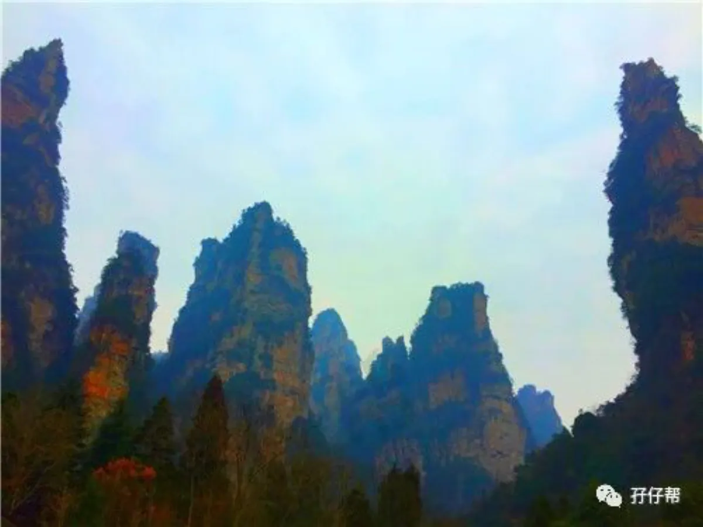
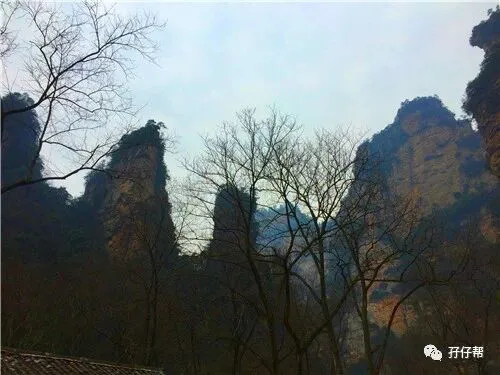
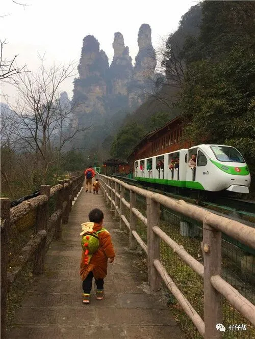
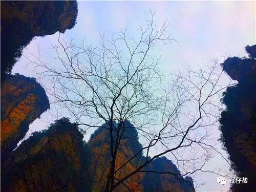
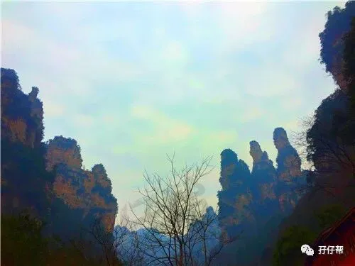
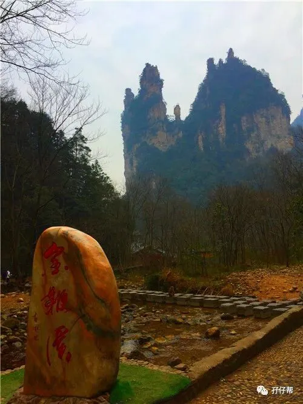
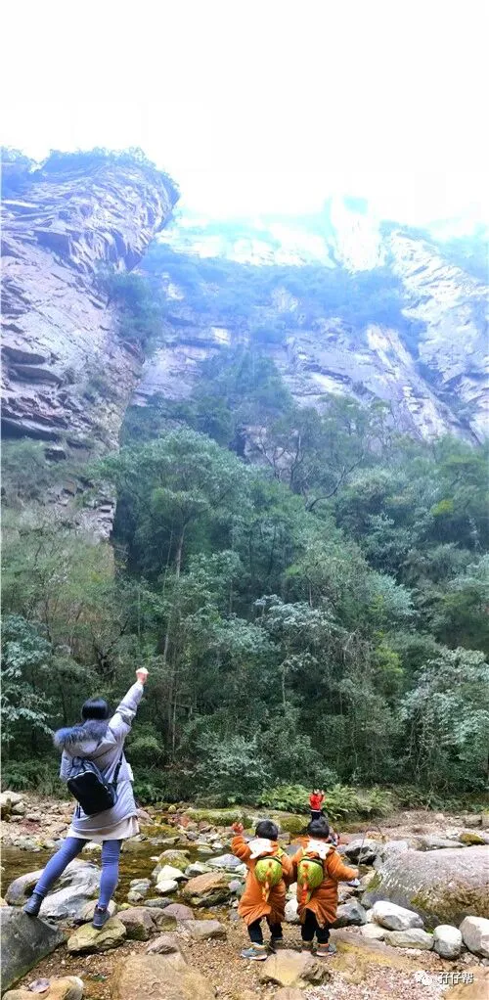
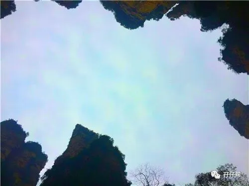
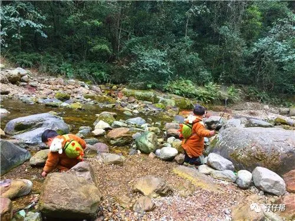
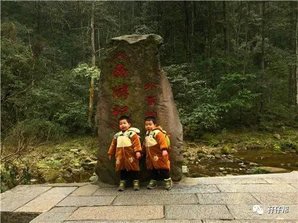
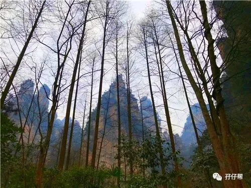
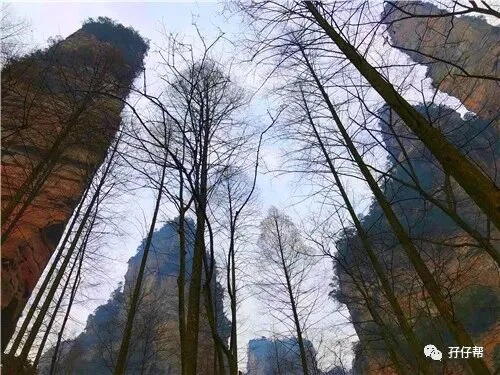
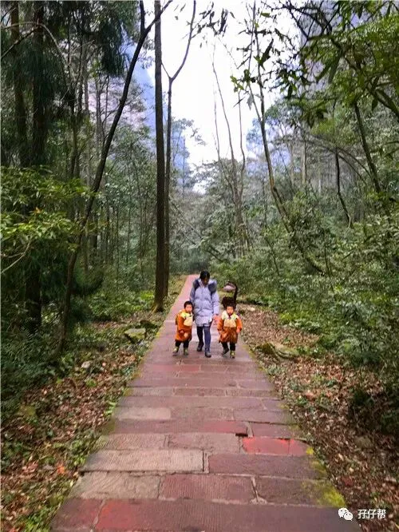